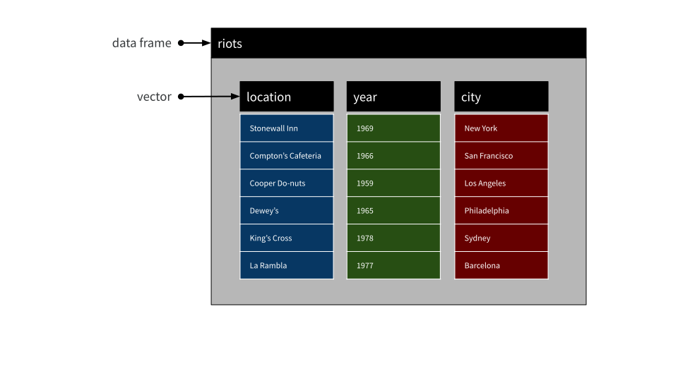
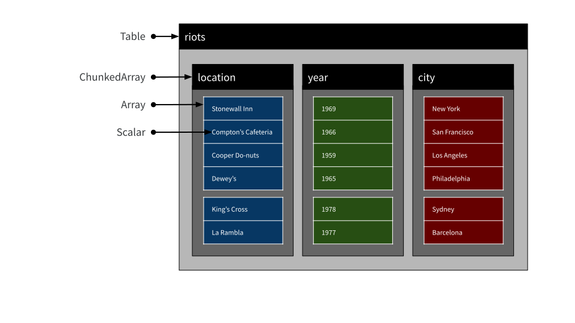
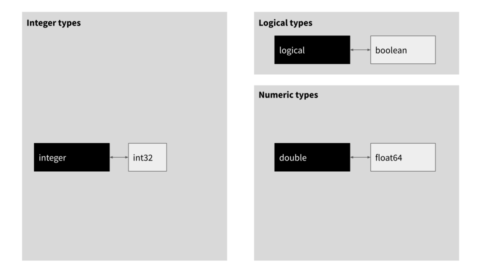
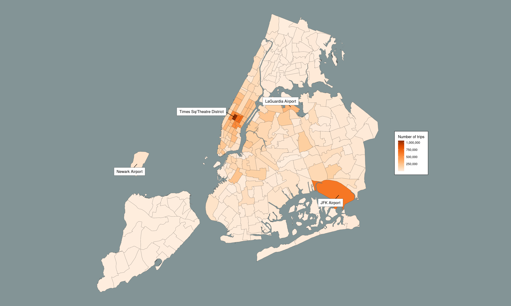

Part 4: Advanced Arrow
It is traditional in any technical workshop that by the time you get to the end, two things are happening: the content is moving toward the most complicated material, and the participants are moving toward a state of exhaustion. This collision is… well, it’s a problem. Nobody involved in the workshop – neither the instructors not the participants – really wants to ramp up the technical difficulty or be forced to think too hard. We’re all tired. Which is a little awkward, because the only things left to cover are complicated topics that build on the material from earlier in the workshop. Not only that, every workshop since the dawn of time runs over the time allocated, so we don’t have much time left to cover these topics. It’s a pedagogical knot.
Here’s how we’re going to untie that knot in this workshop. The final session really is going to talk about advanced topics, but it isn’t going to dive very deep into them, and it’s not going to involve any hands-on exercises. Instead, we’re going to talk about concepts, show some pretty pictures, and point you in the direction of handy resources.
How do we organize in-memory tables?
Now that we’re getting to the end and have a sense of why we’re using Arrow and how we use it, it’s not a bad idea to spend a little time thinking about what in-memory data structures are used by Arrow. How are they organized, and how do they compare to the corresponding structures used by R?
In terms of the diagram we’ve been using to structure our view of the arrow package, we’re in the bottom left corner: the focus is on Arrow Tables, R data frames, and all the constituent data structures that comprise these objects.

Let’s start by thinking about how it works in R. When we work with tabular data structures in R, we’re almost always using a data frame (or a tibble, which is essentially the same thing) and – as you’re probably well aware given that you’re taking this workshop – a data frame is basically a list of vectors representing columns. In other words, data frames are arranged column-wise in memory. The diagram below shows the data structures involved:

Notice that we have only two “tiers” here, vectors and data frames. R doesn’t have any special concept of a “scalar” value: scalars are merely vectors of length 1.
Arrow is a little more complicated. The in-memory tabular data structure you’re most likely to encounter when working with the arrow package is an Arrow Table and as shown below, there are four “tiers”:

Let’s unpack these four tiers in a little more detail. At the lowest level we have the concept of a scalar. A scalar object is simply a single value, that can be of any type. It might be an integer, a string, a timestamp, or any of the different data types that Arrow supports (more on that later). For the current purposes, what matters is that a scalar is one value and is considered to be “zero dimensional”. We rarely have a reason to create an Arrow Scalar from R, but for the record, if you ever want to do so you can do this by calling the Scalar$create() function provided by the arrow package:
Scalar$create("New York")Scalar
New YorkThe next level up the hierarchy is the array, a fundamental data structure in Arrow. An array is a data structure that stores one or more scalar values, and you probably won’t be surprised to hear that you can create one by calling Array$create():
city <- Array$create(c("New York", NA, NA, "Philadelphia"))
cityArray
<string>
[
"New York",
null,
null,
"Philadelphia"
]An array is a one dimensional stucture, and you can extract subsets by using square brackets:
city[1:2]Array
<string>
[
"New York",
null
]So far this all feels very R like: arrays in Arrow feel very similar to vectors in R at first. However, when we start looking more closely we start seeing differences. An R vector is designed to be an extensible, mutable object. A core design decision in Arrow was to make arrays immutable for performance reasons: under the hood an Arrow array is comprised of a fixed set of buffers – contiguous blocks of memory dedicated to that array – along with some metadata. For example, the city array we just created can be unpacked like this:

The details of this don’t matter too much for this workshop, but we’ll do a lightning tour anyway! The most important things here are the three buffers: the first buffer is a block of memory whose bits indicate which elements (or slots, to use Arrow terminology) of the array valid values and which are null. This buffer is the “validity bitmap”. The second buffer stores numeric values and is referred to as the “offset buffer”: it tells you where to look in the third buffer to find the relevant values to fill each of the scalar strings. This makes most sense when we look at the third “data buffer” which is just one long (utf8-encoded) string containing all the text stored in the array. If we want to extract the text contained in a particular slot in the array we consult the equivalent slot in the offset buffer, which tells us where to start reading text from in the data buffer.
In practice, an R user doesn’t need to care about these implementation details, but it’s helpful to understand that these data structures are all design choices that Arrow makes for performance reasons. Making arrays immutable and laying arrays out like this allows Arrow to make extremely efficient use of memory and CPU resources. Unfortunately, this design choice also creates one massive practical problem for data analysts: in real life, data sets change. New data arrive over time, for example. If I cannot add new observations to an array, how can I use an array as the data structure to represent a variable?
The solution to the problem is to use chunked arrays. Chunked arrays are a weird kind of fiction intended to bridge the gap between the needs of the data engineer (arrays need to be immutable objects) and the needs of the data analyst (data variables need to be mutable and extensible). The “trick” is quite simple: a chunked array is a list of one or more arrays, coupled with a convenient set of abstractions that allow the user to pretend that these arrays are all laid out as one long vector. This is illustrated schematically below:

To create the chunked array above, I’d do something like this:
city <- ChunkedArray$create(
c("New York", "San Francisco", "Los Angeles", "Philadelphia"),
c("Sydney", "Barcelona")
)Or, alternatively, I could use the convenience function chunked_array() that does exactly the same job:
city <- chunked_array(
c("New York", "San Francisco", "Los Angeles", "Philadelphia"),
c("Sydney", "Barcelona")
)
cityChunkedArray
[
[
"New York",
"San Francisco",
"Los Angeles",
"Philadelphia"
],
[
"Sydney",
"Barcelona"
]
]Now, in “reality”, what I have done here is create two immutable array objects and wrapped those in a flexible container. Each of those arrays is referred to a “chunk”, and the container a list object that defines the chunked array. But let’s be honest: who cares? The whole point of a chunked array is we can ignore this reality and pretend that this is a length-6 vector. I can extract individual elements using a common indexing scheme:
city[4:6]ChunkedArray
[
[
"Philadelphia"
],
[
"Sydney",
"Barcelona"
]
]These results are being pulled from different chunks, but none of that matters at the user level. This abstraction is what allows you to pretend that chunked arrays in Arrow are the same kind of thing as vectors in R.
At last we reach the top level of the hierarchy. Recall that our lowest level consists of zero-dimensional objects, scalars. The next two levels, arrays and chunked arrays, are both one-dimensional objects (even if it does require a bit of abstraction to make that work for chunked arrays). Once we reach the table level, however, we are talking about two-dimensional structures.
In the same way that an R data frame is an ordered collection of named vectors, an Arrow table is an ordered collection of named chunked arrays. As you might expect given earlier examples, it’s possible to construct a new table using Table$create(), but this time I’ll just jump straight to using the convenience function, arrow_table(). Let’s recreate the riots table exactly, right down to the (completely pointless!) detail of having the exact same chunking structure. To save you scrolling, here’s the table again:
Here’s the command:
riots <- arrow_table(
location = chunked_array(
c("Stonewall Inn", "Compton's Cafeteria", "Cooper Do-nuts", "Dewey's"),
c("King's Cross", "La Rambla")
),
year = chunked_array(
c(1969, 1966, 1959, 1965),
c(1978, 1977)
),
city = chunked_array(
c("New York", "San Francisco", "Los Angeles", "Philadelphia"),
c("Sydney", "Barcelona")
)
)
riotsTable
6 rows x 3 columns
$location <string>
$year <double>
$city <string>Admittedly that is a bit of an anti-climax, because the print method for Arrow tables doesn’t give you a pretty preview, but we can always pull an Arrow table into R to see what it looks like as a tibble. If we have dplyr loaded we can call collect() to do this, but more generally we can coerce the object using as.data.frame():
as.data.frame(riots)# A tibble: 6 × 3
location year city
<chr> <dbl> <chr>
1 Stonewall Inn 1969 New York
2 Compton's Cafeteria 1966 San Francisco
3 Cooper Do-nuts 1959 Los Angeles
4 Dewey's 1965 Philadelphia
5 King's Cross 1978 Sydney
6 La Rambla 1977 Barcelona That’s definitely the right data, but this is an object in R and it doesn’t have any analog of “chunks”. If you want to check that the chunking in our original riots table is identical to the one depicted in the illustration, what can do is print out one of the columns:
riots$cityChunkedArray
[
[
"New York",
"San Francisco",
"Los Angeles",
"Philadelphia"
],
[
"Sydney",
"Barcelona"
]
]For more information on this topic, see the Arrays and tables in Arrow blog post by Danielle Navarro
On record batches
You will also encounter the related concept of a record batch. Record batches are fundamental to the design of Apache Arrow, but we don’t typically work with them during everyday data analysis because Tables provide better high-level abstractions for analysis purposes. Nevertheless it is useful to know what they look like. A record batch is a collection of arrays, in the same way that a table is a collection of chunked arrays. Rendered schematically, a record batch is a two-dimensional data structure that looks like this:

Because it is composed of arrays rather than chunked arrays, a record batch is a lot less flexible than a table, so we don’t really use them much for data analysis. However, they are very important data structures when we’re talking about streaming data from one process to another, so when you start digging into the Arrow documentation you’ll find it talks about them a lot. However, for this workshop we’re more interested in Arrow tables (and datasets), so that’s all we’ll say about them here.
How are scalar types mapped?
In the last section we saw that there’s a natural(ish) mapping between Arrow Tables and R data frames. They aren’t identical data structures, but it’s conceptually possible to associate one with the other. However, if we want to map from one to another, the mapping needs to decide how to map scalar types from one language to the other. Sometimes this is easy. R has a logical type that can take three values (TRUE, FALSE, NA) and Arrow has an equivalent boolean type that also allows three values (true, false, null). It seems natural to translate R logical vectors to Arrow boolean (chunked) arrays, and vice versa. There are other cases where the data structures are essentially identical: the R integer class and the Arrow int32 type are natural analogs of one another, as are R doubles and Arrow float64 types. These three mappings are shown with bidirectional arrows below:

However, as you might have guessed by looking at all that blank space, the story becomes a little more complicated once we look at a wider range of types available for representing logicals, integers, and numeric values in R and Arrow. Here’s what the diagram looks like when we fill in the missing pieces:

The dashed lines linked to the uint32, uint64, and int64 types in Arrow exist because the default mappings in those cases are complicated and depend on user settings and on whether the values contained in the variables are representable using the R integer class.
A similarly nuanced story exists for other data types. There are default bidirectional mappings between character vectors in R and the utf8 type in Arrow, between POSIXct and timestamp, Date and date32, difftime and duration, and finally between the hms::hms class in R and the time32 type in Arrow, but the full story is a little more complex:

For more information on this topic, see the Data types in Arrow and R blog post by Danielle Navarro
The big picture
# ---- the part that really, really needs Arrow ----
nyc_taxi <- open_dataset("~/Datasets/nyc-taxi")
nyc_taxi_zones <- "data/taxi_zone_lookup.csv" |>
read_csv_arrow(
as_data_frame = FALSE,
skip = 1,
schema = schema(
LocationID = int64(),
Borough = utf8(),
Zone = utf8(),
service_zone = utf8()
)
) |>
rename(
location_id = LocationID,
borough = Borough,
zone = Zone,
service_zone = service_zone
)
airport_zones <- nyc_taxi_zones |>
filter(str_detect(zone, "Airport")) |>
pull(location_id)
dropoff_zones <- nyc_taxi_zones |>
select(
dropoff_location_id = location_id,
dropoff_zone = zone
)
airport_pickups <- nyc_taxi |>
filter(pickup_location_id %in% airport_zones) |>
select(
matches("datetime"),
matches("location_id")
) |>
left_join(dropoff_zones) |>
count(dropoff_zone) |>
arrange(desc(n)) |>
collect()
# ---- the part that works so perfectly in R ----
dat <- "data/taxi_zones/taxi_zones.shp" |>
read_sf() |>
clean_names() |>
left_join(airport_pickups,
by = c("zone" = "dropoff_zone")) |>
arrange(desc(n))
pic <- dat |>
ggplot(aes(fill = n)) +
geom_sf(size = .1, color = "#222222") +
scale_fill_distiller(
name = "Number of trips",
labels = label_comma(),
palette = "Oranges",
direction = 1
) +
geom_label_repel(
stat = "sf_coordinates",
data = dat |>
mutate(zone = case_when(
str_detect(zone, "Airport") ~ zone,
str_detect(zone, "Times") ~ zone,
TRUE ~ "")
),
mapping = aes(label = zone, geometry = geometry),
max.overlaps = 50,
box.padding = .5,
label.padding = .5,
label.size = .15,
label.r = 0,
force = 30,
force_pull = 0,
fill = "white",
min.segment.length = 0
) +
theme_void() +
theme(
text = element_text(colour = "black"),
plot.background = element_rect(colour = NA, fill = "#839496"),
legend.background = element_rect(fill = "white"),
legend.margin = margin(10, 10, 10, 10)
) +
NULL
pic